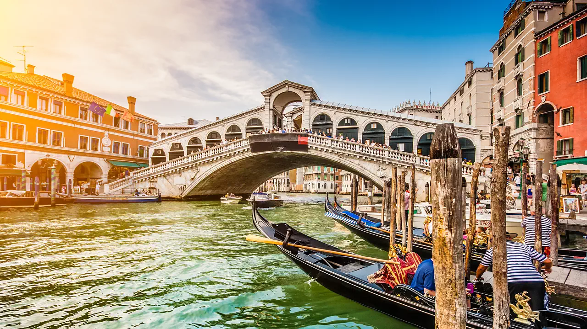
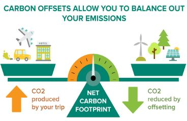
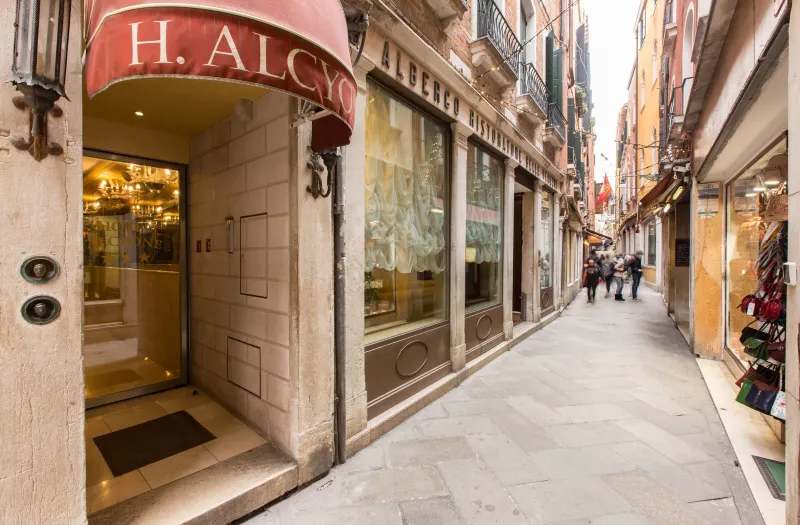
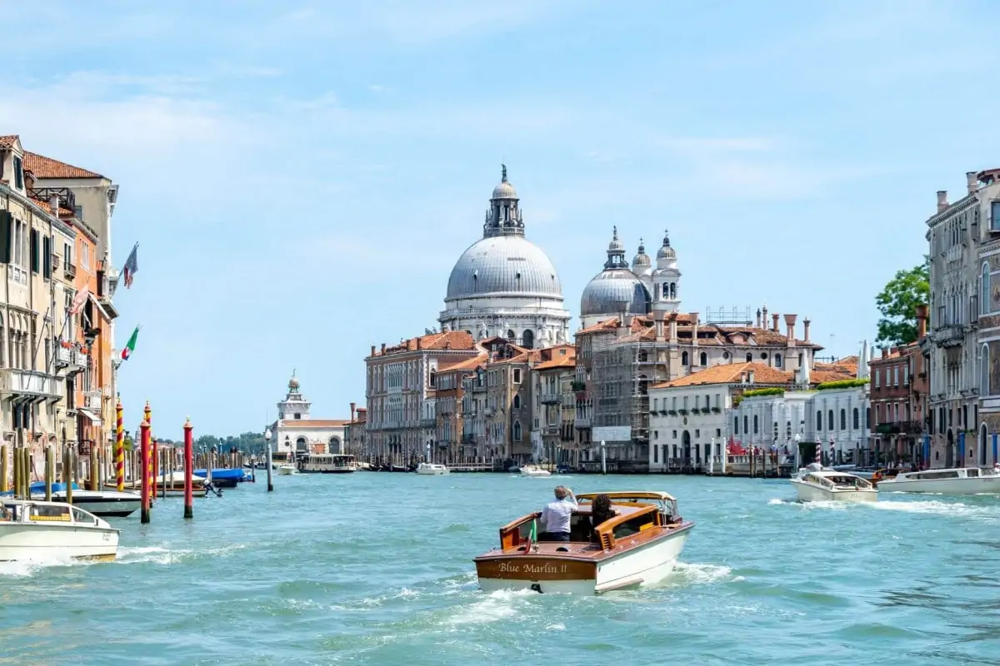
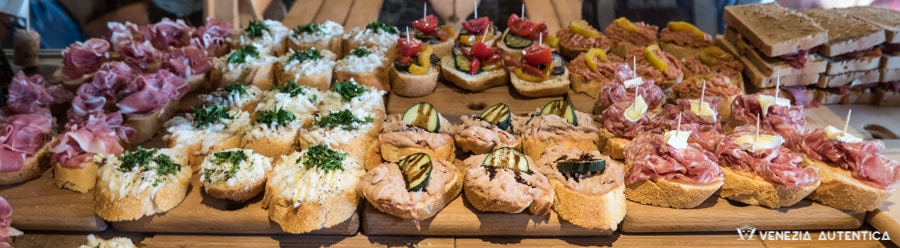

7 Day Venice Itinerary
Hello readers! When wanting to travel more cheeper options can be better. Both for the environment and money in your wallets. As global warming and climate issues become more prominent to us all. We as fellow ravellers should play or part towards keeping Mother Earth and the areas we are going to happy! With thus I present to you an itinerary which you can use to make your Venice trip more carbon friendly while still providing you with a fantastic experience!

What is a “Carbon Offset”?
Well, even before we talk about climate friendly travel. We have to talk about carbon emissions and carbon offset. Carbon emissions are the amount of carbon dioxide which YOU put into the atmosphere. These carbon emissions cause climate change ´, global warming and other terrible environmental phemenons. We can never stop ourselves from completely stopping our carbon emissions. But what we can do is pay a certain amount of money ( a.k.a a carbon offset ) to trusted companies who will do something to the earth with the money which you payed according to the carbo that you used to take away that carbon that you brought into the atmosphere. By for example, planting trees.

How should I get there?
This may sound slightly odd but the more you spend on your flight ( as in travelling in Ecconomy, Business, or first class ) the more environmental damage you cause. Therefore, It may be better to stick onto ecconomy for your flight. Of course if you wanted to go to venice via business class or even first class the more expensive your carbon offset will be. You can use this website ( https://co2.myclimate.org/en/offset_further_emissions ) to calculator the carbon offset of your flight and can pay this offset to this website! And once you pay of this money you are no longer harming the environment through your flight!
Transportation :

Okay so trasport throughout Venice can increase your carbon emissions. But by studying the city I have found that if your hotel is in the city center around the attraction you can walk to all of them which I have suggested in the later parahraph. A nice hotel that I have found which is in walking distance among all of the attractions bellow is the Hotel Alcyone ( If you want to calculate the carbon emissions you make through your hotel you can use a rough estimate of 28.9kg/person/night to calculate your carbon offset). Walking is a great way to get around the city as there are no carbon emissions being produced by doing so. The only flaw in my itinerary regarding transportation throughout the city is the that which is from the airport to the hotel and the hotel to the airport. The distance is 12.8 km between Marco Pollo airport and Hotel Alycone. Therefore, you will have to offset a 26.km trip. I would recommend using public transport as you will produce less carbon dioxide rather than by using a private car. You can use the same website which you used to calculate the carbon offset of your transport to your hotel.

7 day ( 6 nights) Itinerary :
- Day 1 : Travel to Venice
- Day 2 : Grand Canal ( 11 min walk from hotel ), Rialto bridge ( 4 min walk from hotel / 12 min walk from Grand Canal) & Gondola Ride ( By the Rialto bridge )
- Day 3: Basilica di san marco ( 4 min walk from hotel ), Plaza san marco ( 2 min walk from Basilica di san marco ) & Explore shops in plaza san marco ( 3 min from hotel )
- Day 4: Torre dell'Orologio ( 4 min walk from hotel ), Campaline ( 1 min walk from Torre dell’Orologio ) & Basilica di Santa Maria della Salute ( 12 min walk from Campaline and 14 min walk from hotel )
- Day 5: Gallerie dell'Accademia (Fine Arts Museum) ( 12 min walk from hotel )
- Day 6: Atelier Marega ( Mask making workshop and explore cafes near by ( 14 min walk from hotel ) )
- Day 7: Travel back home
Food :

According to the amount of days you spend in Venice you will also result in even emitting carbon in to atmosphere through the food you eat. As it may be harder for you to calculate your carbon footprint for your food to calculate your carbon offset. You can use a rate of 60 kg/person-day to calculate your carbon footprint of the food you ate. And the conversion of .325t = 1 USD to calculate your carbon offset! Yay!!!! Now you can enjoy al of your yummy italian food without worrying about the carbon emissions you will make through it all.
Now all you have to do is total of all of the money which you have to pay for the carbon offset for your trip and pay it to a trustable company who wil use your money to take the carbon out of the atmosphere ( like the one I had added in the second paragraph ). Now you can enjoy your trip without hurting mother earth. The environment salutes you!